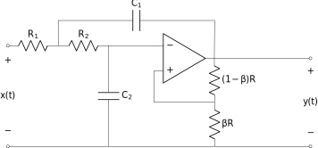
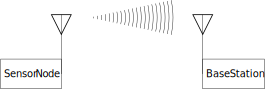

1 Course Introduction
The concepts and techniques in this course are probably the most useful in engineering. A signal is a function of one or more independent variables conveying information about a physical (or virtual) phenomena. A system may respond to signals to produce other signals, or produce signals directly.
This course is about the mathematical models and related techniques for the design and understanding of systems as signal transformations. We focus on a broadly useful class of systems, known as linear, time-invariant systems. You will learn about:
the representation and analysis of signals as information carrying channels
and how to analyze and implement linear, time-invariant systems to transform those signals.
1.1 Example Signals and Systems
Example
Electrical Circuits. This is a Sallen-Key filter, a second-order system commonly use to select frequencies from a signal:

There are two signals we can easily identify, the input signal as the voltage applied across \(x(t)\), and the output voltage measured across \(y(t)\). We build on your circuits course by viewing this circuit as an implementation of a more abstract linear system. We see how it can be viewed as a frequency selective filter. We will see how to answer questions such as: how do we choose the values of the resistors and capacitors to select the frequencies we are interested in? and how do we determine what those frequencies are?
Example
Robotic Joint. This is a Linear, Time-Invariant model of a DC motor, a mixture of electrical and mechanical components.

How do we convert the motor into a servo for use in a robotic joint? What are its characteristics (e.g. how fast can it move)?
Example
Audio Processing. Suppose you record an interview for a podcast, but during an important part of the discussion, the HVAC turns on and there is an annoying noise in the background.

How could you remove the noise minimizing distortion to the rest of the audio?
Example
Communications. Consider a wireless sensor, that needs to transmit to a base station, e.g. a wireless mic system.

How should the signal be processed so it can be transmitted? How should the received signal be processed?
1.2 Types of Problems
Applications of this material occur in all areas of science and engineering. When we have a measured output but are unsure what combination of inputs and system components could have produced it, we have a modeling problem.
Models are the bedrock of the scientific method and are required to apply the concepts of this course to engineering problems.
When we know the input and the system description and desire to know the output we have an analysis problem.
Analysis problems are the kind you have encountered most often already. For example, given an electrical circuit and an applied voltage or current, what are the voltages and currents across and through the various components.
When we know either the input and desired output and seek the system to perform this transformation,
or we know the system description and output and desire the input that would generate the output,
we have a design problem or identification problem.
This course focuses on modeling and analysis with applications to electrical circuits and devices for measurement and control of the physical world and is broadly applicable to all ECE majors. Some Examples:
Controls, Robotics, & Autonomy: LTI systems theory forms the basis of perception and control of machines.
Communications & Networking: LTI systems theory forms the basis of transmission and reception of signals, e.g. AM and FM radio.
Machine Learning: LTI systems are often used to pre-process samples or to create basis functions to improve learning.
Energy & Power Electronic Systems: linear circuits are often modeled as LTI systems.
Subsequent courses, e.g. ECE 3704, focus more on analysis and design.
1.3 Learning Objectives
The learning objectives (LOs) for the course are:
Describe a given system using a block-level description and identify the input/output signals.
Mathematically model continuous and discrete linear, time-invariant systems using differential and difference equations respectively.
Analyze the use of filters and their interpretation in the time and frequency domains and implement standard filters in hardware and/or software.
Apply computations of the four fundamental Fourier transforms to the analysis and design of linear systems.
Communicate solutions to problems and document projects within the domain of signals and systems through formal written documents.
These are broken down further into the following topic learning objectives (TLOs). The TLOs generally map onto one class meeting but are used extensively in later TLOs. In the following LG refers to the course textbook “Signal Processing and Linear Systems” by Lathi and Green.
TLO 1: Course introduction (LG §1.0)
TLO 2: Continuous-time (CT) signals (LG §1.1 through 1.5)
TLO 3: Discrete-time (DT) signals (LG §8.1 through 8.3)
TLO 4: CT systems as linear constant coefficient differential equations (LG §1.6 through §1.10 and §2.5)
TLO 5: DT systems as linear constant coefficient difference equations (LG §9.2 through §9.4)
TLO 6: Linear time invariant CT systems (LG §1.6 through §1.10 )
TLO 7: Linear time invariant DT systems (LG §9.1, 9.6, 9.7)
TLO 8: CT convolution (LG §2.4 through §2.6 )
TLO 9: DT convolution (LG §9.5)
TLO 10: CT block diagrams (LG ?)
TLO 11: DT block diagrams (LG ?)
TLO 12: Eigenfunctions of CT systems (LG §6.1)
TLO 13: Eigenfunctions of DT systems (LG §11.1)
TLO 14: CT Fourier Series representation of signals (LG §3.1 through §3.7)
TLO 15: DT Fourier Series representation of signals (LG §10.1)
TLO 16: CT Fourier Transform (LG §4.1 through §4.4)
TLO 17: DT Fourier Transform (LG §10.2 though §10.4)
TLO 18: CT Frequency Response (LG §4.4)
TLO 19: DT Frequency Response (LG §10.5 )
TLO 20: Frequency Selective Filters in CT (LG §4.5)
TLO 21: Frequency Selective Filters in DT (LG ?)
TLO 22: The Discrete Fourier Transform (LG §10.6)
TLO 23: Sampling (LG §5.1)
TLO 24: Reconstruction (LG §5.2)